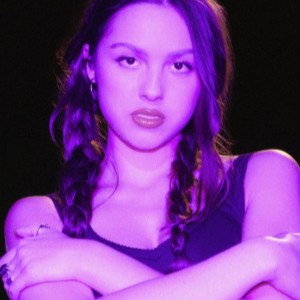
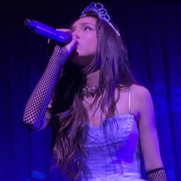

Esperamos que disfrutes explorando nuestra página y descubriendo más
sobre la increíble carrera y el talento de Olivia Rodrigo. Aquí podrás
sumergirte en la vida y obra de una de las artistas más destacadas de
nuestra generación, desde sus humildes comienzos hasta su ascenso a la
fama mundial. Cada sección de nuestra página está diseñada para
ofrecerte una visión completa y detallada de Olivia, su música, sus
logros y su impacto en la cultura pop.
Queremos que esta experiencia sea enriquecedora y entretenida,
proporcionando contenido exclusivo, noticias actualizadas y una
plataforma interactiva donde los fans pueden compartir sus pensamientos
y emociones. Creemos que descubrirás aspectos de Olivia que quizás no
conocías y te conectarás aún más con su arte y su historia. ¡Gracias por
visitarnos y ser parte de esta comunidad dedicada a celebrar a Olivia
Rodrigo! Tu apoyo y entusiasmo son lo que hace posible que continuemos
compartiendo lo mejor de esta talentosa artista. Disfruta tu visita y
vuelve pronto para más novedades y sorpresas.

¡Introducción a Olivia Rodrigo!
Olivia Rodrigo es una de las voces más destacadas de su generación. Nacida el 20 de febrero de 2003 en Murrieta, California, Olivia comenzó su carrera en la actuación antes de convertirse en una sensación musical con su sencillo debut "Drivers License" en 2021. Desde entonces, ha lanzado dos álbumes de gran éxito, "SOUR" y "GUTS", y ha ganado numerosos premios, incluidos tres Grammy.

¿Qué tenemos en esta página?
En esta página web, encontrarás todo lo que necesitas saber sobre Olivia Rodrigo, desde sus inicios en la actuación hasta su meteórica carrera en la música. Aquí hay un vistazo a lo que puedes explorar:
- Biografía: Sumérgete en un recorrido detallado por la vida y la carrera de Olivia Rodrigo, desde sus primeros días en Disney Channel hasta su ascenso a la fama mundial. Aquí exploramos sus inicios en la actuación, su destacada participación en series como "Bizaardvark" y "High School Musical: El Musical: La Serie", y su transición a la música con el lanzamiento de su exitoso sencillo "Drivers License". Descubre cómo Olivia ha evolucionado como artista y cómo sus experiencias personales han influido en su música.
- Discografía: Explora la discografía completa de Olivia Rodrigo, incluyendo información detallada sobre sus álbumes, sencillos y colaboraciones. Analizamos sus canciones más populares, desde los éxitos de su álbum debut "SOUR" hasta las nuevas joyas de su segundo álbum "GUTS". Cada canción es desglosada para revelar los significados y emociones detrás de las letras, ofreciendo una comprensión más profunda de su arte.
- Su Camino a la fama: Olivia Rodrigo ha acumulado una impresionante cantidad de premios y nominaciones a lo largo de su carrera. En esta sección, ofrecemos una lista completa de todos los premios que ha ganado y las nominaciones que ha recibido. Desde los Grammy hasta los MTV Video Music Awards, descubre cómo Olivia ha sido reconocida por su talento y contribuciones a la música.
- Galería de Fotos: Explora nuestra galería de fotos de Olivia Rodrigo. Aquí encontrarás imágenes de sus conciertos. Sumérgete en el mundo visual de Olivia y aprecia la magia de su presencia escénica!.
- Letras y Significados: Descubre las letras de las canciones de Olivia Rodrigo y los significados detrás de cada una. Esta sección ofrece un análisis detallado de sus composiciones, explorando los temas y emociones que Olivia transmite a través de su música. Conoce más sobre el proceso creativo de Olivia y cómo sus experiencias personales se reflejan en sus canciones.
- Contacto y Redes Sociales: Mantente conectado con Olivia Rodrigo a través de sus perfiles oficiales en redes sociales. En esta sección, encontrarás enlaces a sus cuentas de Instagram, Twitter, Facebook y otras plataformas, así como formas de contacto para estar al tanto de todas sus novedades. Sigue a Olivia y forma parte de su creciente comunidad de seguidores